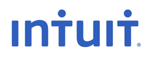
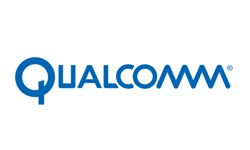
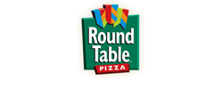

Support Women in Computing ⇢
We would like to give special thanks to:
...for sponsoring the 2012 WIC T-shirts as well as hosting the True Life: I am a Female Engineer at Facebook event.

...for supporting WIC in the past.
...for hosting the Women of Microsoft Event, Career Fairs Exposed, funding the 2011 T-Shirts, and much more.

...for funding the 2012 WIC T-Shirts and for sponsoring the 2011 End of Year WIC Banquet for graduating students.
...for supporting WIC.

...for supporting WIC in the past, especially Donna.
...for supporting WIC.
We would also like to thank: UCSD CSE Department, Jeanne Ferrante's Associate Dean Office, and CSE Alumnus for sponsoring our trip to CWIC.